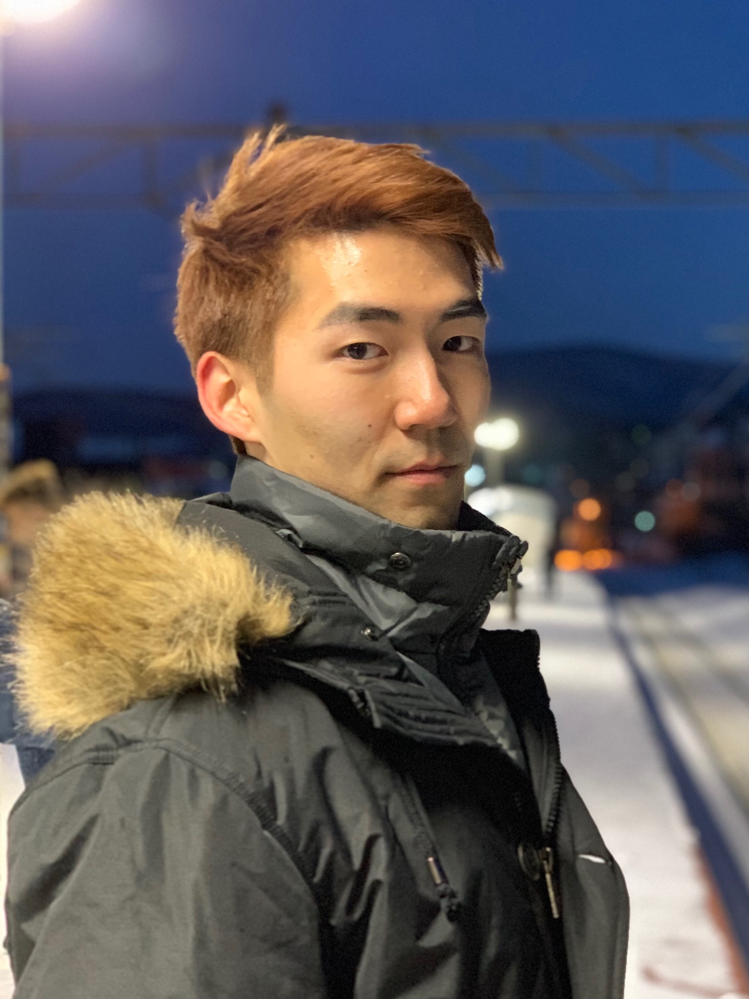

Hi, I'm Kevin Zhang.
I do many things, but mainly I am a:
Computational Roboticist
Software Developer
UX Designer
Student
About Me
I am a senior at Franklin W. Olin College of Engineering, majoring in Computational Robotics Engineering with a concentration in Computer Science. It's a self-made major that combines the technology and expanding topics in robotics with the knowledge and implementation skills of computer science. I am deeply passionate about both software and robots, and as a most curious cat, I just couldn't say no to either one! An avid proponent of the balanced work/life philosophy, I strive for a challenge and endeavor nonstop to learn and contribute, but also pause sometimes to enjoy the small things in life.
"Kevin ... worked on a system for helping with internal testing, interfacing with various sets of hardware and writing algorithms based on data received from said hardware. He jumped right into the challenge, learning the project background quickly, and contributed significantly to the success of the project ... The work resulted in a technology concept which will add to the patent portfolio at Ivani. Kevin’s natural intelligence and commitment to the company were evident throughout the summer. He naturally adapted to our culture, while impacting it in a positive way. Having Kevin work with us for the summer was awesome, and I would not hesitate in recommending him to future employers."
- Matthew Wootton, Chief Technology Officer at Ivani LLC
In academics, I study hard in class and lead the Olin Robotics team. I actively do a lot of self-learning in the fields of artificial intelligence and mobile robotics, in particular reinforcement learning and human-robot interactions. I also play ultimate frisbee, piano, and tennis to keep fit and maintain a healthy, well-rounded lifestyle. Outside of school, I have fun pursuing varying ventures such as building an electric go kart to ride to the dining hall or cooking new recipes in the kitchen. I enjoy learning new things, hanging out with friends, and eating food. A relentless pursuer of all three prongs of the urban legend's academic triangle of Sleep, Social Life, and Knowledge, people back at home know me as a man famous for his (ocassional) booming and bright laughter, and the guy you can always depend on.
Want learn more about me? Click below.
More About MeMy Experience
amazon robotics
Summer 2018 Internship
nuTonomy
Summer 2017 Internship
Ivani
Summer 2016 Internship

Portfolio Highlights
Project: Gemini
Robotics Systems and Integration

Project: Nevo
Computational Mobile Robotics
Frost
Stark Industries
Want to see more of my portfolio? Click below.
Full Portfolioamazon robotics
Software Development Engineering Intern
Summer 2018
Aetos Dios, the messenger eagle of Zeus, is where the name of my project comes from. Just as Aetos was Zeus's companion in all things and helped him in various ways, my tool is meant to be a companion to my team and Amazon Robotics at large, helping them by making life easier.
Amazon Robotics, a wholly owned subsidiary of Amazon.com, empowers a smarter, faster, more consistent customer experience through automation. Amazon Robotics automates fulfillment center operations using various methods of robotic technology including autonomous mobile robots, computer vision, depth sensing, and machine learning. As an intern I was not only given a project that held a large stake of company value, about 2TB of data and $20 million daily, but also self-initiated some of my own endeavors to further improve the robustness of the company infrastructure and availability.
I interned on the Insights team, whose job is to take in all of the raw data from various processes and services around Amazon and process it into usable data for reporting and analytics for other teams and users. We operate on a global scale, and our goal is allow the company as a whole to make intelligent, data-driven decisions and adapt to change. My project was meant to address the Insights team infrastructure, the main pipeline that takes in raw data from other services and processes it. Currently, any single component within the pipeline can break and cause problems in the system, and in order to resolve errors and maintain the pipeline, a team member must manually go through each component one-by-one, step-by-step, and figure out what the problem is on their own. This process is not only time consuming but also results in longer downtimes of data servers and other services around Amazon in the case of issues, which can lead to millions of dollars lost for Amazon given the scale at which we operate. Thus, I came up with the solution of Aetos Dios, an all-in-one stop service that sits in front of the Insights pipeline and allows for easy viewing and understanding of the health of the pipeline in one consolidated place.
Beginning this project, I actually had 0 relevant experience or skills to fall back on. I had never really dealt with Cloud Computing before this, had never worked databases or AWS, nor had I any experience with Data Operations and Big Data, let alone Full Stack Web Development (the most I had done being this website, which runs on Github pages). I think the major story of this internship and my journey during the summer was simply diving into the thick of everything and learning as much as I could as fast as possible, and then applying it immediately towards my project. jQuery, Ajax, Data Handling, Spring, Tomcat, DynamoDB, AWS, and more, all of it was learned on the spot and used to ensure the success of the project.
After 10 weeks of learning new concepts, applying them to create MVPs, getting feedback for improvements and then iterating to create a better product, I arrived at my solution. Aetos Dios consists of three major components: A module that collects the operation metrics data from the Insights pipeline, a module that evaluates the collected data for health understanding and pinpointing any errors should they exist, and a module that takes the evaluated information and makes it available for users to interact with in a web app. The tool was created with the goals of creating a fast service that could compute data quickly while also displaying its computations easily and intuitively for a smooth user experience, and finally maintaining a modular, flexible underlying framework so that the tool can persist for generations and adapt to change. I worked alone on this project, creating the entire full stack, from backend data collection and evaluation to frontend API, web server, and UI design, and by the end of the internship I was able to complete the service and deploy it into the beta stage. It was a successful project that had immediate positive impact for the team.
A visual of what my tool, Aetos Dios, is meant to do. For example, say a team member encounters an issue with service infrastructure, then they can simply go to Aetos Dios and check if the issue is already located and handled there. If so, then manual resolution can be skipped and the process is easy and immediate. When viewed from the perspective of Amazon's massive scale, the time saved here and longer online periods for the services means millions of dollars saved annually.
After the product was finished and deployed, I measured the usefulness of my tool by running empirical analyses. I ended up finding that when Aetos Dios can come into use, interacting with the tool in its entirety, a user can load the webpage and finish usage taking away full understanding of the problem and how to resolve it in under 10 seconds on average. Meanwhile, a user manually performing the tradition step-by-step method can take at least 10 minutes on average. Here it is easy to see that Aetos Dios improves team workflow and also reduces service downtime by over an order of magnitude. When considering how impactful the Insights team is in terms of helping other teams and being the crux of data processing at Amazon Robotics, Aetos Dios's efficiency has likely saved Amazon at least tens of millions of dollars annually. Then considering the tool's modularity, team members can continue to modify and expand the coverage of the tool, which can only continue to help the team and let the company reap benefits.
After my original project was finished, I also used my own initiative and created additional functionality in the tool. I set up long term data storage on the data Aetos Dios was collecting, and then experimented with various neural networks to categorize data trends and predict when certain problems might occur. Unfortunately due to lack of time I was unable to deploy this capability, but the door is wide open for the team to develop predictive analytics and augment its infrastructure even further than Aetos Dios did.
I learned a lot from this internship and was able to expand my breadth of knowledge greatly. I think Amazon has also gained a service that will be of great use to them and help them save lots of time and money. This was my final internship of undergraduate, and it was a very fun one, full of learning and new interesting things. I will continue to dive deep into the world of mobile robotics, adaptive learning models, and artificial intelligence (perhaps even in the cloud!), and am planning on searching for a full time position in a computational robotics role.
nuTonomy
Autonomous Vehicle Intern
Summer 2017

(Above) A team picture of the crew. (Bottom three) snapshots of an MVP of nuZebra.
nuTonomy is a fast-paced startup with a bold mission of completely changing the urban transportation scene. They aim to create their own fully functioning system that enables perception, localization, mapping, planning, controls, and safety for an autonomous vehicle. And their software, nuCore, is on track to make it a reality. As one of the only two undergraduate interns given the opportunity to work with nuTonomy over the summer, I dived right into the fray to not only learn more about the world of driverless cars but also contribute to the company and help them reach their goal.
At the start of the internship, I was tasked with the formal project of creating a smart diagnostics tool for Team Car, the group that interfaced most closely with the autonomous cars themselves. I was to work alone on the project, and the only major requirements were that it could scan as many aspects of the car as possible and provide immediate feedback as to the car's condition, and that it remain easily usable, maintainable, and modifiable, as future users might find a new problem that they would want added. Doing my own research, I realized that Team Car was largely responsible for software road release testing, car maintenance and conversions, as well as code debugging and software release management. Whenever a problem was discovered, such as a car breaking down or the code not working, Team Car would have to go down a large list of possible problems and manually check them one by one. Observing them one time attempting to figure out why a car wouldn't start, I found that it could take them up to a week just to resolve an issue before even starting with testing or more productive items, and often times the same type problem would occur, making it seem like the team was running in circles. The goal for my tool was to automate this process, and prevent unnecessary manual labor from hindering progress on the software new releases. Thus I began to work on the tool, later naming it nuZebra (zebra is slang for "exotic diagnosis" in medical circles).
To begin, the tool needed to be scalable, yet fast and accurate. Since a number of people in the company weren't software majors, the tool also needed to be easily usable by a lay man. I used Python and PyQt as my main interfaces because the company was most familiar with these libraries across the various teams. I decided to build the tool from the ground up and use an iterative process to prototype increasingly complex interfaces and frameworks, taking into account feedback from others. I spent most of my first six weeks creating the backend framework, making sure to establish a modular, multi-layered code architecture, such that later code modifications were easy and did not disrupt the core of the software. After finishing the backend mechanism and ensuring proper functionality of the tool, I turned to content creation and front end design. Since the software I was creating was meant to be an internal tool used by the company itself, I decided to hold weekly meetings with company members to get their input on how the tool looked and felt. Near the end of the summer I also held a Team Car-wide meeting to get their feedback on the UI, since they were most likely to be the main users. I ended up designing a highly minimalistic interface with nuTonomy's color scheme and simplistic buttons as the main interactive mechanism. All data and information was split into high level and lower level types, with high level immediately displayed and lower level accessible with the push of a button. The tool covered software statuses and release versions, sensor statuses and incoming data, as well as system information and hardware data. There was also room for car CAN bus data as well as mechanical outputs, but due to time constraints I could only create the framework for those. After many iterations and much polishing, I was able to deliver a fully functional, well designed nuZebra to Team Car.
In addition to its completion, I was also able to deploy my tool onto the cars. We tested nuZebra on the autonomous cars to great success, and even went out on a software road release after using it to efficiently ascertain the status of the car. The team was glad that they could now spend less nights working at the company, and my manager was even surprised by the ease of use and amount of data I was able to incorporate into nuZebra. They plan to use it for future testing and incorporate it into their formal car startup and road release sequences.
(Left to Right) Visualizations showing the proof of concept of the Reinforcement Learning environment being implemented on a parked car avoidance scenario, first starting out, then training 1500 trials, and then converged behavior after 1500 trials.
My main project was going so well, that at some point I realized I was almost a month ahead of schedule. With my manager's approval, I decided to seek out new side projects where I could help other teams on as well, since I had the extra time and desire to learn about what other teams were doing.
I found a side project with the perception team, who was looking for a way to automate config/param loading and execution. At the time, for every different scenario or car, the team had to write up a brand new config file, and then manually load it into the system upon runtime. This resulted not only in slow testing iteration, but also created a troublesome 100+ file structure in the codebase due to massive numbers of config files that had to be saved, most of them being identical save a few differences for different maps or scenarios. I then helped the perception team design a config generator that could automatically create config files in real time. It utilized a pool of possible config templates, and then with a few parameters could build a new config file for that specific run of the system. The generator was also wrapped up as a nice executable module, so all one had to do was call it and it would run with the given parameters. The generator was also built to be highly modular, so the parameter/config file could be customized as much or as little as one wanted. The config generator ended up cleaning up a huge section of the codebase, and since it could be called at runtime, streamlined execution of the nuCore system.
Due to the first one going so smoothly, I also found a second side project to work on. The planning team head was curious about potentially incorporating new models into the planner that determined how the autonomous car moves, and he wanted someone to spend time exploring different types of planning models. The planning team head noted he believed that there is a fair chance the optimal planner would require both deterministic and nondeterministic models to fully account for all possibilities. Since the current model is mostly deterministic and operates using on a priority-rule based system, he wanted me to research nondeterministic models and their feasibility in solving complex problems. After much digging, I learned about multiple different options, such as Sequential Game Theory, Value Iteration, and Learned based models. I became very interested in Reinforcement Learning as a potential candidate. Since it was the backbone of AI achievements such as conquering Go, Chess, and most recently a multiplayer online video game known as Dota 2, I thought it might work as a suitable model. I did a lot of offline self-learning and research in an effort to fully understand Reinforcement Learning and how it might work in mobile robotics planning. Towards the end of my internship, I was able to construct a Reinforcement Learning environment that solved mobile robotics problems. I then applied it to a parked car scenario and created an MVP, which I presented to the planning team lead. Due to time constraints, I used a fairly simplistic Reinforcement Learning implementation, where I built a discretized space and mapped it to a Q-Learning algorithm. The position of the vehicle was considered the state space, and the actions in this instance were discretized to be turn left, turn right, go straight, or stop. I then used an advanced form of the Bellman equation with a simulator that I built to simulate a converged behavior of the autonomous vehicle successfully navigating its way through the scenario. The MVP showed that RL-based models could be feasible for autonomous car planning, albeit some caveats and further research needed to more concretely ascertain its exact usefulness. The planning team was grateful for my efforts in exploring an unknown territory for them, and said they plan on looking into it with more scrutiny in the future.
My experience with nuTonomy was an amazing and symbiotic one. An autonomous vehicle company like nuTonomy was my dream company for this summer, and I got my wish granted. I worked harder than I ever had before for a company, and helped them optimize their codebase, improve their testing and car system, as well as introduce new potential models to the planning team. In turn, they gave me so much advice and taught me many things about mobile robotics, planning, and AI systems. Most importantly, they helped me finalize my decision to pursue mobile robotics as my career path. Moving forward, I hope to immerse myself further into the world of robotics and intern at a larger robotics company to gain even more experience. I look forward to the day I can see a nuTonomy taxi on the roads in Boston.
Ivani
Software Engineering Intern
Summer 2016
A basic visual of the technology my team created
Ivani is a start up working on revolutionary network presence sensing technology that allows wireless communication systems to observe RF disturbances without the addition of new hardware. It then analyzes these disturbances to determine the physical occupancy of a person inside a room. As a college freshman, Ivani took a chance on me as a student with comparatively less experience but equipped with a wide array of skills and a bright motivation to learn and make an impact, and I seized the opportunity to deliver.
Teamed up with fellow Oliner Liani Lye, I was assigned the task of creating a testing module for the company's original presence sensing system, with the idea being to train the original. We exceeded the project goals and ended up developing a brand new patent-pending presence sensing technology that not only trained the original system but could also act as a stand alone presence detection system. The technology we created both detects a person's physical presence, and also determines where the person is in reference to the detection field, such as how far away they are, whether they are approaching the room or moving away, etc. What's special about the technology is that it doesn't require any new hardware; all nodes of the system can come from off-the-shelf hardware that most households already possess. This makes our technology both extremely modular and easily integrated into existing systems. Our team was well organized with weekly sprints and check-ins with each other and our supervisor, constant communication and pair programming, as well as occasional personal conversation to ensure best performance from the team. Because we were trying to create something that had never been done before, we used a very systematic approach, first performing many tests and experiments to understand more about the system, then breaking down the problem into smaller portions that we would individually tackle, and then eventually re-combining the pieces using an iterative process. My role on the team for this project mainly involved designing the software algorithms and optimizing them, as well as writing firmware for sensor hardware. I was also involved in sensor fusion and decision making, trying to understand the data we were seeing as well as mapping out where the user is in context to the detection system. We ended with an MVP that interfaced with a Raspberry Pi and created a network of sensors on the user, in rooms, and in the hallways. It determined presence, relative location of the user to a room, and real time movements of the user. Our creation will streamline further development of the full-timers' main presence sensing technology and expand the company's repertoire of presence sensing capabilities. Our work paved the way for Ivani's next projects in the pipeline, People Counting and People Locating.
In addition to the main project, Liani and I also thought up a secondary project that we believed could augment the main project we were working on. I personally spearheaded this exploratory venture, and I ended up creating a sensor construct that integrated additional data streams to improve the output of the main project. The process for this project mirrored that of the main. The augmentation I created stabilized the main algorithm and provided more consistent and accurate outputs. Because of the additional sensors I integrated into the system, we also created the framework for the ability of the technology to learn trends and statistics, thus being able to predict the pathway that a user will most likely take in a home and optimize lighting or other appliances. The construct I added to the original project ended up increasing accuracy of outputs and predictions by about 40%, thus significantly boosting the system's performance.
The technology we were creating was so new that we eventually realized that it could be patented. We contributed to a patent application on this new technology, effectively bolstering company assets. The patent, Reverse-Beacon Indoor Positioning System Using Existing Detection Fields, is currently submitted and is in progress for filing. The company estimates that the patent will be worth at least $300,000 once it's completely filed and being utilized.
Besides the main projects I worked on, I also took initiative to take on several smaller quality of life projects not just for my team but also for the company as a whole. I flushed out a modular code architecture for future software development that increased code readability and organization and also provided easier development of new codebases. The framework compartmentalized the presence sensing process into three main parts, and outlined general methods that all processes should use. The architecture was actually implemented in our team codebase and made both communication and debugging much more efficient. I also laid the foundations for test-driven development by conceptualizing a unit testing system that allowed for more optimized development. I not only designed a robust unit testing process but also wrote a comprehensive guide to allow the full timers to learn about the system on their own time. While the system isn't currently being used because the company is still small enough such that direct communication is faster, the company definitely believes that it will come into use once the company grows further and a more organized system will be needed. Finally, I helped characterize test inputs for system development, running various experiments to help the company better understand the data they were reading. I actually came to several conclusions that gave the full-timers many new things to consider moving forward, such as trends in the data and previously unknown traits that occasionally will be exhibited under certain conditions. Using data analytics, I ended up finding a flaw in the current microcontroller the company was using and confirmed the need to switch to a new microcontroller, which was two times faster and much more consistent.
Overall, the Summer of 2016 has been the most fun, most educational, and most accomplished summer I've ever had. I believe that both Ivani and I have benefitted greatly from this experience, and I can't wait to see what's next, for me and Ivani.
Project: Gemini
Robotics Systems & Integration and Interactive Robotics Laboratory joint venture
Spring 2018
In the Spring of 2018, the highest level course in robotics at Olin, Robotic Systems and Integration, decided to shift its focus towards teaching students professional research and learning first hand how research is conducted in the real world. To make it as realistic as possible and bring in as many resources as we could, the Olin Robotics Laboratory and Robotic Systems and Integration teamed up in a joint venture to launch four research thrusts for a semester. I was the leader of one of those thrusts, in which I combined my existing team from the Interactive Robotics Laboratory (a subset of Olin Robotics) with my class team from Robotic Systems and Integration to form a research group. We set out to research if it was possible to create a robot system that was intelligent enough to build a structure together with a human. By the end of January 2018, we had received over $1000 in research grant funding from the college, and Project Gemini was underway.
I was project manager of my research group, composed of 10 students from both the class and IRL. We set up 4 subteams: Perception, Planning, Controls, and Acutation. Each team worked within themselves to research and complete their portion of the project, and I provided guidance and advice to each team individually, later coordinating efforts to integrate the overall product together as well as leading the high level direction of all subteams so that we all ended up on the same page. I was personally in charge of the Planning team, which was my focus for the first half of the semester. Our job was to figure out how, when given a set of building blocks that constitute the structure in question, should we go about putting them together into a set of instructions for our robot system to build. We performed extensive research of automated building and generalized a set of criteria that constructing structures generally follow. We then decided that based on the way the criteria functioned, an adaptive learning model might be a good idea to be able to adequately cover all criteria named and possibly more. More research led us to reinforcement learning as the learning model of choice.
My team then dived deep into reinforcement learning. To scope properly for a semester, we decided to go with Q-Learning, as it was intuitive yet powerful and easy to set up. Our initial testing with our Q-Learning model only yielded roughly 50% accuracy when given a structure comprised of building blocks. We discovered that processing on all components within the structure was too complex and would require more high-end models that would put us out of scope, therefore we simplified the problem in various ways, for example assuming that each "level" of a structure must be built first before higher levels can be built because of gravity. Through more research and testing, we eventually tuned the reward function and parameters to reach convergence as quickly as possible, which occurred at around 4.5 million trials. We were able to successfully plan instructions for a structure by "levels", and then just concatenated the instructions we received sequentially going up those levels, which achieved the goal of build planning. We attempted to take it further and expand the capability of our Q-Learning model, however we quickly realized that taking on more levels or more components would just take too long for convergence, and advancing the model to something like a DQN learning model would be necessary. However again, due to time, we were unable to meet the stretch goal. Our Q-Learning model that solved structures by "levels" could converge within 3 hours, reach 99.5% accuracy, and performed the desired behavior perfectly within the same order of magnitude in terms of speed as a hard-coded solver. While we could've taken the subteam further with more time, we would still call our achievements a great success. The Planning team proved that it was possible to create an intelligence that was capable of learning how to build a structure once shown its components, and we were able to create an MVP that demonstrated its feasibility.
After my team was nearing their end goal, I began turning towards the other teams and integration. I had been constantly helping other teams and providing advice as project leader the entire semester, but now it was time to begin more actionable items and help all teams converge to the same product. I spent many hours talking with individual teams and facilitating inter-team communications, so that inputs matched outputs and interactions made sense when put together. We ended up a smooth connected interaction that started with a human using toy cubes to create a small model structure and showing it to the robot system, then the system perceiving the structure and recognizing all the components needed to build it, then the planner I was in charge of taking all of the components and figuring out the optimized way to build them all together into a solid structure, then the controller deciding how to actually execute the planned instructions in the real world and then working with the mechanical actuators to physically build the structure using life-sized building blocks. All members worked with me to make sure that their pieces were integrated correctly with subteams they interacted with, and it was a major group effort to combine all of our research efforts into a polished product. By May, we had completed Project Gemini, a dual UR5 robot arm system that could build any structure a human showed it, consisting up to 125 components.
We presented for our final research presentation and Olin Exposition. In both occasions, people were amazed by our results, and we even had visitors make never-before-seen structures to present to Gemini, at which the system recognized, planned, and executed construction of the structures like it was business as usual, creating almost 10 perfect life-sized replicas without any mistakes during live demonstrations. We were incredibly happy with our successes this semester, as this was not only an achievement for the research thrust in the class, but also a big milestone for IRL the research organization. Moving forward, we hope to be able to keep researching in this direction and create more intelligent behaviors that build off of our achievements this semester. We also plan on publishing a research paper later on, with the hopes of attending a robotics conference in the future.
Project: Nevo
Genetic Algorithms Environment
Spring 2017
In the Spring of 2017, for the final project of Computational Robotics, I was tasked with two other Oliners, Shane Kelly and David Zhu, to create something "cool". Given the open-ended project, we wanted to do something learning-based that was outside the "mainstream" bounds of machine learning and neural networks to explore and expand our knowledge. Shane then mentioned that genetic algorithms was a thing, and thus we began Project: Nevo.
Genetic algorithms are as the name suggests, algorithms that take parameters/weights as "genes", and use a process similar to natural selection to evolve the genes to their optimized state. Over many iterations of choosing the "best" genes and mutating them to create potentially even stronger genes, the "most fit" gene can be found, which is then the optimized parameters for a given behavior or objective. We decided to implement a genetic algorithm environment that could teach mobile Neato robots how to perform multi-robot interactions, such as teaching a group of robots to form a line.
David was more into codebase architecture and designing a robust code structure and software flow, so Shane and I were in charge of implementing the core of the genetic algorithm software. David created a base environment that included a modular simulator, and Shane and I worked on the Genetic Algorithm framework. We created a modular system for a generation evolution incubator that could plug and play any "task" given a fitness function and a simulation framework. We then both worked on different tasks, thus completing the environment and creating a polished product. Our approach was to establish a strong core system, and then expand from there with experimentation and iteration. Our core consisted of David's environment wrapped around our evolution system, and we expanded with new tasks while optimizing the existing codebase. Shane and I worked extensively first on making our genetic algorithm work with a simple task, and we performed many tests to find the best parameters for evolution. I then began to work on cooperative tasks, and Shane took on competitive tasks. This involved figuring out how to increase the complexity of the task while ensuring it worked with the evolution system. For cooperative tasks, I had included all Neatos' position and orientations into account and factored them all into the reward functions, with double positives doubling the reward. The simulation framework also had to factor in multiple Neatos, as they had to know each other's positions and orientations. I also took on the task of interfacing between our simulation environment and the real world, using sensor fusion and a mirrored framework to the simulation system to create a new system branch that could easily translate our optimal "genes" to the real world. I used computer vision to map our simulation into a 3D space in the real world, and then replaced simulation portions with apriltag markers and sensors. I also figured out how to apply our software onto multiple robots, thus creating a system of mobile Neatos that could interact with each other. By the end of the semester, we had implemented and optimized Neato systems for Waypoint Navigation, Linear Regression, and Tag.
We presented our work at EXPO, and many were highly impressed with our ability to use a non-mainstream model to exhibit highly organized, intelligent behavior between multiple Neatos. Our professor was especially impressed since we showed him something he had never seen before. This project was a great learning experience and also a chance to better understand robust code structure. I learned a ton about the breadth of learning models out there from Shane, and David taught me that a codebase is never fully optimized, as there are always ways to better streamline software execution or improve code architecture. Moving forward, I want to learn more about the different methods of learning that exist, as well as work with mobile robots even more. There are so many things you can do with Neatos once you bring intelligent behavior onto the table.
Frost
Autonomous Snowball Launcher
Stark Industries
Fall 2016
In October of 2016, I teamed up with friends Cedric Kim, Daniel Daugherty, Kevin Guo, and Jeremy Garcia under the name Stark Industries to design and build an autonomous snowball launcher. With winter coming up in Boston and weather forecasts predicting a bountiful snow season this year, we wanted to collaborate and put our skill sets together to create the ultimate weapon in snowball fights. We noticed from last year's snowball fights that we were really bad at hitting the opposing team, and getting wet in the cold from snow falling into our clothes wasn't fun. We wanted to build a robot that could dominate snowball fights, with bullseye accuracy and strong defense against snow. To make some tangible goals, we set forth a number of specifications that we wanted this robot to have: it would be able to shoot up to 40 feet away, be able to automatically arm and re-arm itself within 6 seconds, find and lock on targets without any user input and fire more accurately than a human, and be able to handle the entire snowball shooting sequence from packing a snowball to firing it by itself. We named this robot Frost.
To build Frost, we decided to split up into subteams to tackle the individual components. Jeremy and I would take on software, and Cedric, Daniel, and Kevin would take on mechanical. Due to a lack of a strong electrical engineer, we decided that we would all pitch in for any electrical portions, of which there were few. We split up the project into four two-week sprints, with goals to meet each sprint. Cedric and I took informal leadership roles in our subteams as well as planning out next steps and sprint goals. Due to schedule conflicts, we decided that each member would be responsible on their own for finishing their portion of that sprint's goal, and as close friends, we trusted each other to do so. With this setup, we managed to complete the project in under 8 weeks.
In the First Sprint, we decided to first create a proof of concept that such a robot was physically possible, as there were no online sources to confirm its feasibility. Our goal was to create a prototype, a miniature catapult that could be electronically controlled. On the software team, our main goal for this sprint was to write the firmware for the Arduino that controlled the motors to actuate the catapult and turn the pan control. I worked mainly on getting the firmware logic to work with panning towards a specific direction, arming, firing a set distance, and then re-arming. Jeremy created a basic interface so that we could easily manipulate various variables to test out our catapult prototype. By the end of the sprint, we were able put together a prototype of Frost. I managed to streamline the firing sequence such that we met our goal of arming, firing, and re-arming in under 6 seconds. We tested the catapult in multiple different experiments and confirmed that it was indeed possible to create Frost. It was feasible to create an autonomous snowball launcher. We were on a roll.
For the Second Sprint, our goals became a little too ambitious. We wanted to push our limits and see how far we could get, so we decided to create all the intelligent and autonomous parts of Frost. Mechanical decided to try and build their own LIDAR and create a compactor mechanism for packing snowballs, and software decided to attempt autonomous vision tracking and interface with the LIDAR once built. For this sprint, I worked mainly on interfacing with a Kinect camera and getting computer vision to work with our prototype as well as helping out with interfacing with the LIDAR, and Jeremy worked mainly on experimenting with various methods to try to find and track a human in a camera's field of view. Jeremy found out that motion detection was a viable option, but we soon discovered that the pan motor was too often confused because the outputs weren't consistent enough. The mechanical team also did not have much luck either. At the end of the sprint, neither subteam was able to reach their goals. We decided to pivot away from a completely autonomous robot and tossed the idea of the compactor. Now the robot was autonomous starting from when a user gives it a packed snowball. We treated this sprint as a significant learning experience about proper scoping and understanding our limits.
In the Third Sprint, we kept our same goal as before to finish adding autonomy to Frost, but this time with renewed vigor. I joined Jeremy in experimenting and developing finding and tracking. I discovered a robust method through body detection that used machine learning to search for the contours of a human body, and together Jeremy and I worked on developing this method. We managed to bring accuracy of detecting a human body up to over 90%, and I optimized the algorithm to ensure constant, consistent output so that the actuators would always know where to go. I worked with Cedric on the LIDAR, mainly in creating a multiprocessing code architecture to integrate it with the data from the body detection module. I also wrote out the decision making algorithm that told Frost where to point and how far to shoot based on inputs from the Kinect and the LIDAR. By the end of the third sprint, we had successfully created an intelligent version of Frost, capable of finding targets on its own and firing towards them with a successful hit percentage of about 80%.
In the Fourth and Final Sprint, it was the home stretch, and our goal was to finish building the final robot and integrate all our intelligence on the final version. For the software team, this meant optimizing the LIDAR, body detection, and integration modules and making sure they were perfect. I took on the task of optimizing the software modules, and Jeremy decided to create a nice website to document our work. I managed to stabilize LIDAR output and optimize the body detection module to correctly detect and track bodies almost 100% of the time, with constant output. Finally, I improved the integration and decision making algorithms such that Frost's firing accuracy was about 98%, always shooting within 6 inches of the target's center, which is almost a guaranteed hit. After that, I worked with the team to build the catapult. We finished fabricating and assembling our final catapult, which was bigger, made of metal, and much stronger than the prototype. We also remade our circuit boards and other electrical components to accommodate for the new robot. With the finished Mechanical, Software, and Electrical components ready, we finished our project by integrating all the parts together and improving the final product until it was ready. We completed Frost in December 2016.
Come Olin EXPO, we showcased Frost to the community and let guests have a test run with getting found and shot at by Frost up to 40 feet away. Unfortunately, there was no snow that day, so we settled with a plushy toy. Even then, the crowd was blown away by our work, and many people wanted multiple turns. After some documentation and publicity work, we have completed our work with Frost - the Autonomous Snowball Launcher. Come next semester, when the snow begins to fall, the people who once gaped in amazement will soon run in fear when we return from winter break to dominate the snowball game.
Copyright © thezhangster.com 2018
Made with HTML5, JavaScript, CSS